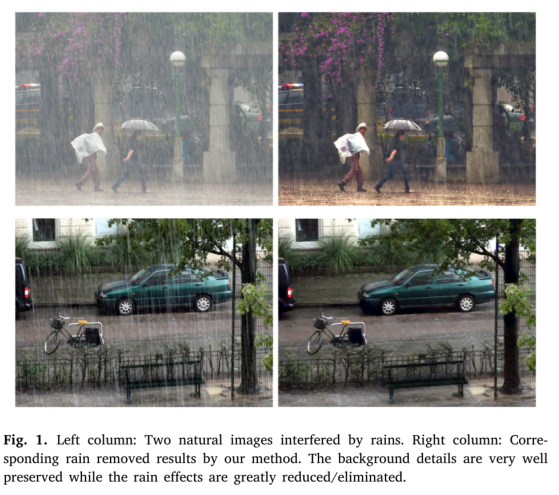
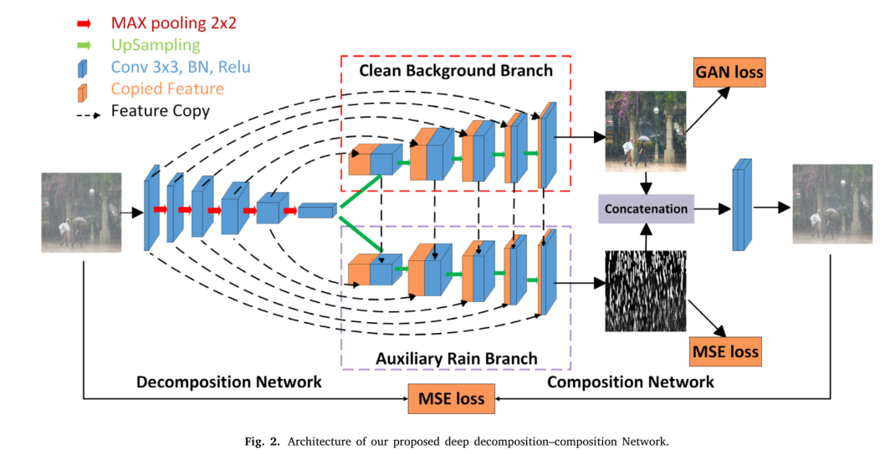
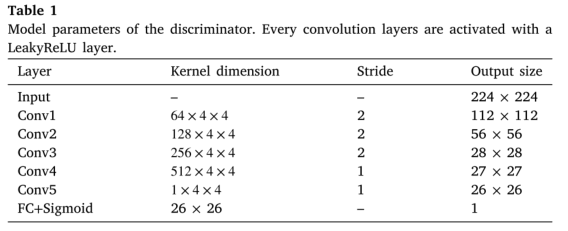
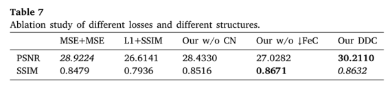
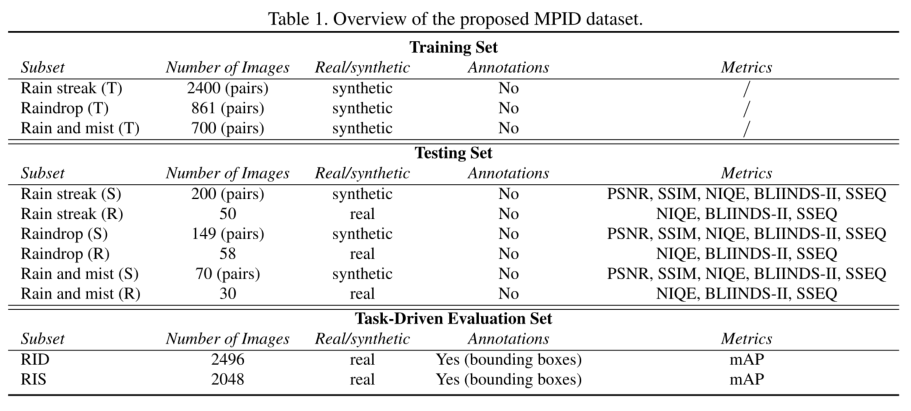

论文阅读-0x05
论文的阅读笔记（Wenqi Ren 任文琦老师）：
《Single image rain removal via a deep decomposition–composition network》[code] , CVIU 2019
《Single Image Deraining: A Comprehensive Benchmark Analysis》[project]，CVPR 2019
Single image rain removal via a deep decomposition–composition network
Abstract
- 设计了一种新的端到端多任务学习结构，减少了输入到输出的映射范围，提高了性能
- 构建一个分解网，将雨图像分割为干净的背景和雨层
- 模型除了包含一个表示所需的干净图像的组件外，还包含一个用于雨层的额外组件
- 在训练阶段，进一步采用合成结构将分离出来的干净图像和雨水信息重新生成输入，以提高分解质量
- 大气中的雨一般有两种存在方式，即稳定雨和动态雨
- 持续的降雨是由远处遍布整个场景的微小雨滴造成的，这在视觉上类似于背景中的雾/雾/薄雾
- 动态的则来自于大颗粒(雨纹)，这些颗粒看起来像随机的和局部的腐败

- 从形式上看，雨天图像可以看作是两个层的叠加
- 其中表示观测数据， 和 分别表示雨层和期望的干净背景
- 是一个混合函数
- 从数学上讲，将一幅图像分解成两层是一个严重的不适定问题(NP难度)，因为需要恢复的未知量是给定测量值的两倍
- 在自然干净的背景和/或雨层上使用各种先验。采用多幅图像或视频序列来提供丰富的时间信息是一种常用的方案，以降低背景场景恢复的难度
- 这些基于多帧的方法在实践中不太吸引人，因为帧需要以一种良好的控制方式捕获，限制了它们的灵活性和适用性
- 输入多幅图像，它们的时间信息可能没有很好的对齐，因此不可靠
- 由于可用信息较少，基于单帧的方法更具挑战性，需要额外的先验来规范解决方案
- 虽然基于深度学习的策略在除雨方面比传统方法有了进一步的进步，但仍存在两个挑战
- 如何提高深层架构的有效性，更好地利用训练数据，获得更准确的恢复结果
- 如何提高测试图像的处理效率，以满足真实(实时)任务的高速要求
- 本文提出了一种新的深度分解合成网络(DDC-Net)，可以有效地去除单一图像在不同条件下的降雨效应
- 所设计的网络由分解网和合成网组成
- 建立分解网，将雨天图像分割为干净的背景和雨点层
- 模型体积保持小，性能良好，因此，架构的有效性得到了提高
- 合成网是将分解网中分离出的两层重新生成输入的雨图像，目的是进一步提高分解的质量
- 与以前的深层模型不同，该模型明确地考虑了雨层的恢复精度
- 从传递性的角度来看，联合考虑分解和合成与CycleGAN提出的循环一致性概念相似
- 从技术角度来看，我们的DDC-Net与CycleGAN有很大的不同
- 样式转换vs层分离
- CycleGAN需要一对一的映射输入转换到结果(在训练过程中,没有真是样本)和另一个一对一的逆向映射(包含真实样本)；而DDC-Net从输入层执行一到二的分解，然后接上一个从二到一的合成层，在两个映射方向上都有真实样本信息
- 根据场景混合模式，作者不是简单的加性混合，而是合成一个包含10400个三部分(rain image, clean background, rain information)的训练数据集。所以在测试阶段，只需要分解网部分
- 基于多帧图像的去雨方法
- 附加了一个约束来提高降雨条纹探测的准确性;约束表明，不同RGB通道的雨条纹强度变化是高度相关的
- 一般来说，当给定的信息具有足够的冗余性时，这种方法可以提供合理的结果
- 但在实际应用中经常违反这一条件。例如，一个视频序列被一个(快速或突然)移动的摄像机捕获，这使得时间对准不准确。有时雨图像是由静止相机或来自互联网，甚至没有参考。
- 基于单帧图像的去雨方法
- 将输入的雨图像分成包含结构的低频分量和包含雨条纹和背景纹理的高频分量。然后根据构建的字典将图像纹理与细节层中的雨纹区分开来，并将其添加回结构层
- 一方面，这些基于先验的方法即使有训练有素的词典/GMMs的帮助，仍然无法捕捉到背景和雨层充分明显的特征
- 另一方面，它们的计算成本对于实际应用来说太大了
As for deraining, Fu et al. proposed a deep detail network (DDN) (Fu et al., 2017), inspired by Kang et al. (2012). It first decomposes a rain image into a detail layer and a structure layer. Then the network focuses on the high-frequency layer to learn the residual map of rain streaks. The restored result is formed by adding the extracted details back to the structure layer. Yang et al. (2017a) proposed a convolutional neural network (CNN) based method to jointly detect and remove rain streaks from a single image (JORDER). They used a multi-stream network to capture the rain streak component with different scales and shapes. The rain information is then fed into the network to further learn rain streak intensity. By recurrently doing so, the rain effect can be detected and removed from input images. The work in Zhang et al. (2017a) proposes a single image de-raining method called image deraining conditional gen- eral adversarial network (ID-CGAN), which concerns quantitative, visual and also discriminative issues into the objective function. In Zhang and Patel (2018), a density-aware multistream densely connected convolu- tional neural network (DID-MDN) was designed for joint rain density estimation and image deraining. Pan et al. proposed a general dual convolutional neural network (DualCNN) for low-level vision problems like deraining and superresolution (Pan et al., 2018). Despite the progress made by deep models, the effectiveness and efficiency of deep architectures still need to be further improved.
- 基于单帧图像的除雾方法
- 持续降雨导致类似于雾霾的视觉现象，可以通过除雾技术缓解
- 大多数现有的这类方法都是通过估计传输转换图来恢复无雾图像
Deep decomposition–composition network:DDC-Net

decomposition net
- 将雨图像分割为干净的背景和雨层的分解网络主要有两个分支:一个是恢复背景，另一个是恢复雨信息
- 基于残差 encoder和decoder架构构建分解分支
- 前两个卷积层采用扩容卷积来扩大接收域
- stride=1x1, max-pooling
- 使用两种解码器网络(干净背景分支和辅助雨分支)分别恢复干净背景和雨层
- 来自干净背景分支的反卷积模块将连接到辅助降雨分支，以便在上采样阶段（向下箭头）更好地获取降雨信息
- 背景特性希望能够帮助从雨的部分中排除属于背景的纹理
- 作者也尝试了将雨水噪声的特性添加到背景分支中，但是并没有明显的性能改进。原因是由于雨的纹理通常比背景纹理更简单和规则
- 前两个卷积层采用扩容卷积来扩大接收域
- 对合成图像进行预训练
- 由于是合成图像，所以能直接得到原始干净背景图像和雨线信息以及最后合成的雨图，构成一个图像三元组，从而直接对干净背景分支和雨分支进行训练更新
- 为了得到恢复后的图像与原始图像之间的差异，计算结果与目标图像之间的欧氏距离，因此在预训练阶段中，干净背景图像和雨层的损失为：
-
- N表示图像数量， 为Frobenius范数（一种矩阵范数）， 和 表示第i个输入、背景图像和雨图，其中 和 表示干净背景分支和辅助雨分支
- 在真实图像上进行微调
- 由于合成的雨层在真实场景中无法区分衰减和飞溅的效果，所以使用从Flicker和谷歌中收集的真实无雨和有雨图像来对我们的模型进行微调
- 在这个阶段，不再使用图像三元组(对于真实的图像也没有这样的三元组，即没有雨线信息)，只需要雨天的图像和干净的图像。所以该阶段作者只是利用分解网络生成复原的图像，从而欺骗鉴别器，引入生成式对抗网络GAN 损失
- 该阶段不再对雨层分支进行训练更新
- 作者希望对抗模型能够帮助训练分解网络，分解网络生成增强的图像，该图像可以欺骗鉴别器D，将该增强图像识别为真实图像
- 对抗损失：
- 鉴别器D：

composition net
- 其目的是从分解模型的输出中学习到原始的雨图像，然后利用构建的雨图像作为自监督信息来指导反向传播
- 利用分解模型，可以将一个雨图像分解为两个相应的组件
- 第一个组件是从干净背景分支中恢复无雨图像B
- 第二个是雨层R，由辅助雨分支学习
- 因此，可以通过简单的方式直接合成对应的雨图像O
- 不过该公式是有限的，因为还有其他因素涉及到雨图像，如雾霾和飞溅
- 为了缓解这个问题，将干净的背景图像和分解网络中的雨层拼接起来，然后使用一个额外的CNN块来建模真实的雨天图像
- 这样所提出的合成网络可以实现更一般的合成过程，并能解释真实图像中的一些未知现象
- 然后定义了一个二次训练代价函数来度量重构后的雨图像与原始雨图像的差值
-
- 这里f表示整个网络
- 所以在最终的在测试阶段，只需要干净的背景分支来生成所需的结果
training dataset
- 作者提倡使用场景混合模式来合成数据，以更好地近似真实情况
- 其中 表示 哈达玛积(一种矩阵运算)，两个图层中的像素值被倒转、相乘，然后再倒转
- 干净的背景图像B来自BSD300数据集。降雨部分R是按照不同强度、不同方向和不同重叠的步骤生成的。最后以场景融合的方式将两部分融合。这样合成的雨天图像更有物理意义
- 可以得到了一个包含10400个三元组数据集(雨图像，干净的背景，雨层)。在微调阶段，我们只采集15幅真实图像，随机裁剪240个样本，尺寸为224×224
Experiment

- 本文提出了一种新的用于单幅图像去雨的深度结构，即深度分解-合成网络，它由分解网络和合成网络两个主要子网络组成
- 建立分解网络，将雨水图像分割为干净的背景和雨水层
- 与以前的架构不同，我们的分解模型除了包含一个表示所需的干净图像的组件外，还包含一个用于雨层的额外组件
- 在训练阶段，附加的合成结构用于通过分离的干净图像和雨信息来再现输入，以进一步提高分解质量
- 此外，通过合成数据得到的预训练模型通过无配对监督进一步微调，以更好地适应实际情况
- 在合成和真实图像上的实验结果显示了我们的设计的有效性，并证明了与其他先进的方法相比，它的明显优势。在运行时间方面，我们的方法明显快于其他的技术，这可以扩大对高速要求的去雨任务的适用性
Single Image Deraining: A Comprehensive Benchmark Analysis
Abstract
- 目前提出的很多去雨算法，都是使用特定类型的合成图像，假设一个特定的降雨模型，加上一些真实图像进行评估
- 目前还不清楚这些算法将如何在“野外”获取的雨天图像上执行，以及我如何衡量该领域的进展
- 本文提出了一个综合研究和评价现有的单一图像去雨算法，使用一个新的大规模基准，包括合成和真实世界的各种类型的雨图像
- 这个数据集强调不同降雨模型(雨条纹，雨滴，雨和薄雾),以及丰富多样的评估标准(完全和无参考的客观，主观和特定任务)
- 我们的评估和分析表明合成多雨的图像和真实图像之间的性能差距,使我们能够更好地确定每种方法的优势和局限性以及未来的研究方向
- 近年来，在单一图像去雨方面取得了重大进展。主要归因于各种自然图像先验和基于深度卷积神经网络(CNN)的模型
- 雨图像公式化模型
- 降雨是一个复杂的大气过程，由于雨滴大小、降雨密度和风速等环境因素的影响，降雨会导致多种不同类型的能见度下降
- 当拍摄雨天图像时，雨水在数字图像上的视觉效果进一步取决于许多相机参数，如曝光时间、景深和分辨率等
- 大多数现有的去雨任务会假设一个降雨模型(通常是降雨条纹)，这可能会过度简化问题
- 作者将文献中已有的降雨模型分为三大类:条纹雨、雨滴、雨和雾
- 将一幅雨条纹图像建模为清晰背景B和稀疏的线形雨分量S的线性叠加:
- 整个场景中积累的降雨条纹会降低背景B的能见度。这是大多数去雨算法最常见的假设模型
- 附着在相机镜头或窗玻璃上的雨滴会阻碍和/或模糊背景场景。因此雨滴退化图像可以建模为干净背景B和雨滴D在散射的小尺度局部相干区域的模糊或阻碍效应的组合
- M是二进制掩码，而表示逐元素乘法。 在蒙版中，如果M（x）= 1，则像素x是雨滴区域的一部分，否则属于背景
- 在真实情况下，雨天图像经常同时包含雨和雾，而远处的雨条纹在整个场景中累积，以一种更类似于雾的方式降低能见度，在图像背景中创造一个类似雾的现象，定义捕获图像的雨和雾模型基于雨条纹模式和大气散射雾模式的合成
- S为雨条纹分量，t和A分别是确定雾/雾成分的透射图和大气光
- 不过作者认为这些算法仍然存在许多不足之处
- 对雨的建模过于简化，即每种方法只考虑和评估一种类型的雨
- 在合成图像上显示出许多定量结果，但这些图像通常无法捕获真实降雨的复杂性和特征
- 由于最后一点的原因，对于图像恢复，评价指标大多局限于(完全参考)PSNR和SSIM。当涉及到其他任务目的时，比如人类感知质量或计算机视觉效用，它们之间的联系可能不够紧密
- 作者构造了一个大型基准，称为多用途图像去雨(MPID)，MPID数据集涵盖了更广泛的雨模型(雨条纹、雨滴、雨和雾)，包括用于评估的合成和真实世界的图像，并具有多种内容和2个来源(对于真实雨图像)
- 此外，作为图像去雨处理方面的首次尝试，作者为自动任务和视频监控场景分别注释了两组带有目标边界框的雨天图像，用于特定任务的评估
- 去雨方法概述：
- 基于多帧图像的方法
- 基于先验的方法
- 利用干净图像或降雨类型先验来去除降雨
- 不过都依赖于良好(且相对简单)的预先设计。因此，在场景复杂、形态复杂的真实图像上，它们的表现往往不尽人意
- 数据驱动的CNN模型
- 尽管基于深度学习的除雨方法与基于先验的除雨方法相比取得了进步，但它们的性能取决于合成的训练数据，如果真实的雨天图像出现域不匹配，则可能会出现问题
- 数据集
- 现有的数据集要么规模太小，局限于一种降雨类型(条纹或下降)
- 要么缺乏足够的真实世界图像来进行不同的评估
- 此外，它们没有任何语义注释，也没有考虑任何后续任务性能
New Benchmark: Multi-Purpose Image Deraining (MPID)
- 评估角度从传统的PSNR/SSIM，到无参考感知驱动指标和人的主观质量，再到“任务驱动指标”，这些指标表明了目标计算机视觉任务在图像去雨任务上的执行情况
- 作者从合成和现实世界的资源中大规模地生成/收集图像，覆盖不同的现实场景，并在需要时注释它们

-
训练集：包含三个合成模型
- Rain streak (T)：包含的2400对干净-雨图像，其中雨图由干净图像生成（清晰背景B和稀疏的线形雨分量S的线性叠加）
- Rain drop (T)：由861对干净的和雨滴图像组成，来自借用
- Rain and mist (T)：使用大气散射模型添加雾，700对
-
测试集：从合成图像到真实图像
- 利用上面相同的方式来得到三个综合测试集：Rain streak (S) 200对, Rain drop (S) 149对 和 Rain and mist (S) 70对
- 在每个测试集上，使用经典的PSNR和SSIM指标来评估去雨算法的恢复性能
- 为了预测对人类观察者的感知质量，引入了三种无参考的IQA模型以补充PSNR/SSIM的不足
- 自然图像质量评估器(NIQE)：用于指示图像的感知“自然”程度：得分越小，表示感知质量越好
- 空间光谱熵的质量(SSEQ)
- 使用DCT统计的盲图像完整性标记器(BLIINDS-II)
- SSEQ和BLIINDS-II得分范围从0（最差）到100（最佳）
- 作者还收集了三组真实世界的图像：Rain streak ®, Raindrop ®, and Rain and mist ®
- 它们分别属于三种定义的降雨类别，以评估失量化算法在真实世界中的泛化效果
-
任务驱动的评估集
- 高级计算机视觉任务的性能，如目标检测和识别，在各种感官和环境恶化的情况下会恶化。去雨算法可以作为多雨条件下计算机视觉任务的预处理
- 为此收集了两组数据
- 雨天驾车时采集的车载摄像头采集的雨中行车集(RID)
- 雨效应最接近于相机镜头上的“雨滴”
- 雨天网络交通监控摄像头采集的雨中行车集(RIS)
- 雨效应是最接近于“雨和雾”(许多相机在雨中有雾凝结，低分辨率也会导致更多的雾效应)
- 雨天驾车时采集的车载摄像头采集的雨中行车集(RID)
Experimental Comparison
- 作者在MPID山评估了六种算法
- 高斯混合模型先验（GMM），联合雨滴检测和去除（JORDER），深层细节网络（DDN），条件生成对抗网络（CGAN），使用多流密集网络的密度感知图像去雨方法（DIDMDN）和DeRaindrop。 除GMM之外，其他所有算法都是基于CNN的最新算法
实验部分感觉就是做了各种分析，表明了各种网络在不同类型雨图下的性能表现
作者在最后提出了对未来方向的一些看法：
- 降雨类型多样，需要专门的模型。某些模型或组件被发现对特定的雨类型很有前途，例如，雨探测/注意，GANs，以及像补丁级GMM这样的先验。我们还提倡将适当的先验和数据驱动方法相结合
- 对于所有的雨类型，没有一个最佳的解算算法。为了处理真实的复杂多变的降雨，可能需要考虑专家的混合模型。另一个实际有用的方向是发展特定场景的减量化，例如交通视图
- 在所有指标下，也没有一种最佳的去雨算法。在设计去雨算法时，需要清楚它的最终目的。此外，经典的感知指标本身在评估去雨时可能存在问题。开发新的指标可能和新算法一样重要
- 在合成配对数据上训练的算法可能很难推广到真实数据上，特别是在复杂的雨类型上，如雨和雾。对所有真实数据进行不配对的训练可能会很有趣。
- 现有的方法似乎不能直接帮助检测。这可能会鼓励社区开发新的健壮的算法，以解释在真实的雨天图像中出现的高水平视觉问题。另一方面，为了实现雨中检测的鲁棒性，不需要采用雨中预处理